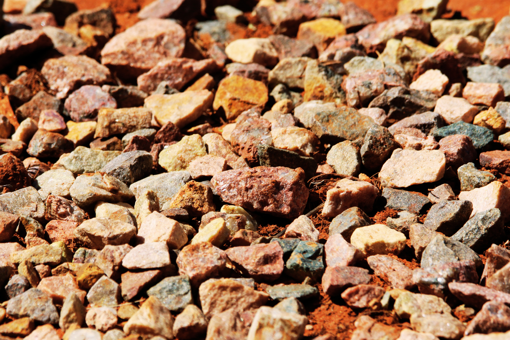
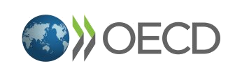
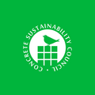
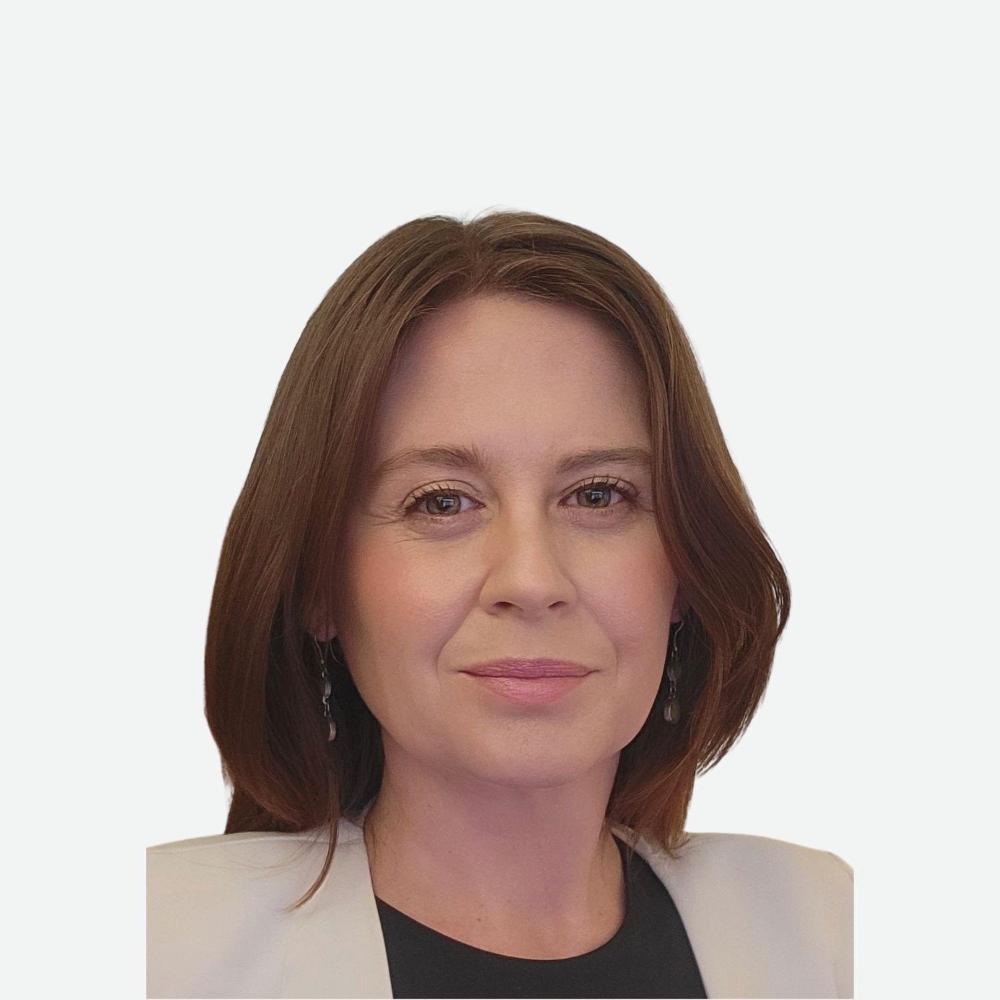
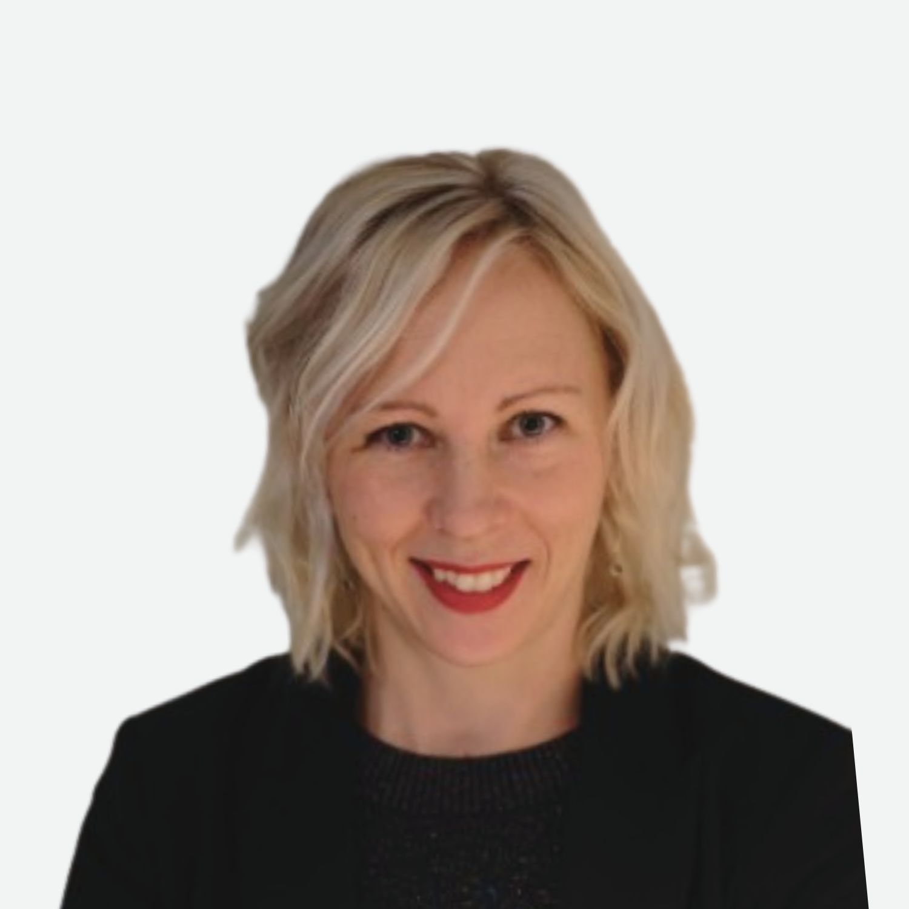
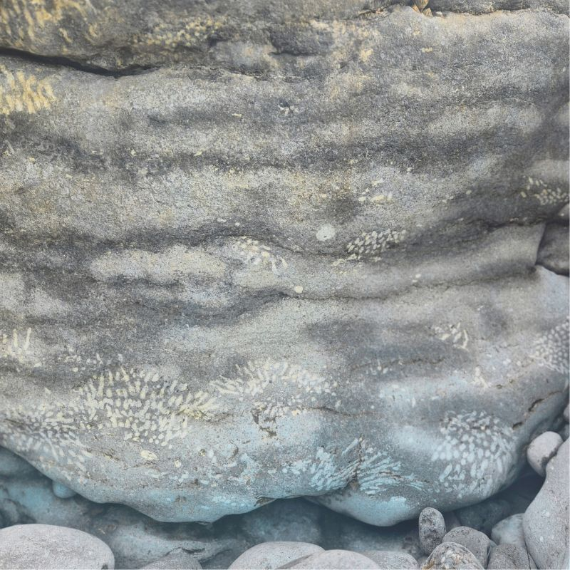

A credible commitment
Shaping clear norms and guidance, practical tools and shared red lines and green flags. Grounded in the OECD Due Diligence Guidelines and extending into positive contributions that go beyond risk avoidance.
We are building practical frameworks for responsible sourcing and production of sand and silicates. Defining better practices, testing solutions in real supply chains and creating the tools that turn commitment into action.

Sand and silicates are the most extracted solid materials on Earth and the foundation of modern life. Each year, tens of billions of tonnes are used worldwide to build homes, infrastructure, electronics and energy systems. Aggregates, clays, industrial sands, natural stone and high-purity silica and quartz are often treated as freely abundant and low risk. These assumptions no longer hold.
When materials are taken for granted, questions of origin, management and accountability fade. The consequences of this invisibility are linked to human-rights, environmental and systemic risks, including growing pressure on secure supply.
Responsible public governance and business conduct are now expected. Responsibility for sand and silicates remains weakly defined, which leaves room to lead. The means to do that is what the Coalition is building.
The Coalition is a cross-sector platform focused on three actions. We are not a standards body. We are the dedicated knowledge and practice platform for this material family, built to work with the people who source, produce, regulate and depend on these materials every day.
Shaping clear norms and guidance, practical tools and shared red lines and green flags. Grounded in the OECD Due Diligence Guidelines and extending into positive contributions that go beyond risk avoidance.
Building the evidence base, testing due diligence approaches in real supply chains and making data and insights actionable so learning travels beyond individual pilots.
Working with standards bodies as a connector, critical friend and resource. Helping them bring sand and silicates into their frameworks so that responsible action is recognised.
Supply chain responsibility practice is shaped by the OECD's Responsible Business Conduct work and its Due Diligence Guidance. That work is only beginning to treat sand and silicates as a field of application.
Integration, not a parallel system. We bring these materials into the system that already exists, rather than building something separate alongside it.
Adaptation where the materials require it. The five step process holds. What changes is what it asks for in supply chains this diffuse, this local and this lightly documented.
Common ground as the end point. Shared definitions, frameworks and practices let companies demonstrate responsibility against a global benchmark, and send a clearer signal about risk and opportunity into the market.
The Coalition's knowledge base rests on years of foundational work by its Members and Secretariat staff. Coalition Members contributed to UNEP's work on sand and sustainability, establishing the case for global sand governance. Two recent studies led by The University of Queensland then set out the case for responsible sourcing of these materials.
An OECD study on due diligence for sand and silicates supply chains, published in 2026, confirms these materials belong on international responsible-minerals agendas. A second study, commissioned by GIZ and due for publication, examines raw materials in semiconductor supply chains. It situates sand within wider debates on supply security and industrial policy.
The Coalition for Responsible Sand and Silicates is a not-for-profit, public company limited by guarantee, incorporated in Australia. The Board took up its work in July 2026. The Directors are Daniel Holm, Anne Pleash and Kai Eberspaecher.
Holds fiduciary responsibility for the Coalition and is ultimately responsible for managing it. Directors are nominated and elected by Members, serve three year terms and are not remunerated.
Advises the Directors on strategic direction, the annual programme of work and the budget, and recommends the membership criteria and the annual fee. Every Founder Member and Founder Supporter appoints a participant, and decisions are reached by consensus wherever possible.
Runs the Coalition day to day, coordinating Members, partners and the programme of work. It prepares the deliverables the Advisory Council reviews and the Board decides on.
The Constitution was adopted on incorporation as a starting framework. Members will review it at the first Annual General Meeting, scheduled for November 2026.
The Coalition for Responsible Sand and Silicates was incubated at the University of Queensland's Sustainable Minerals Institute, through the Global Centre for Mineral Security. The Centre created the conditions for collaboration across industry, civil society and research groups. The development and spin-out were funded by The University of Queensland through its Resourcing Decarbonisation and Trailblazer initiatives. Inter IKEA, Roca Group and MCS Group also funded the work, and we are grateful to each of them.
Key moments
Many people and organisations have been part of this work, giving us support and guidance along the way.


The Secretariat's role is to serve the Coalition's Members: coordinating partnerships, managing operations and ensuring the work gets done. As a small team, we share responsibility across strategy, delivery and relationship-building.

Louise leads knowledge co-production, partnership development and strategic engagement. With a background in environmental social science and governance, she designs collaborative processes that bring diverse stakeholders together to address complex sustainability challenges. Her research and network-building help establish foundations for the Coalition's work.
Daniel leads organisational design and governance systems. With expertise in responsible minerals sourcing and social performance assessment, and experience running his own businesses, he builds the operational models and strategic frameworks that enable effective collaboration. Daniel is guiding the Coalition's transition from a research initiative to an independent, mission-driven organisation.

Elin manages Member onboarding and the Coalition community, and contributes technical expertise across the programme of work. A former Materials & Innovation Manager at H&M Group, she brings downstream industry experience to the Coalition. After contributing as a Founder, she joined the Secretariat to help translate the Coalition's approach into practice across supply chains.
If you are interested in learning more about our work, we would like to hear from you. Get in touch with Elin and she will guide you from there.
